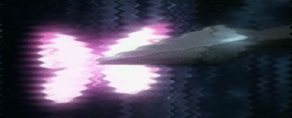

Odio a los que aman fácil, a los que tiene esa
mirada láser que los pierde a primera vista. Odio a los que
siempre van de la mano de alguien, a los que no pueden estar solos.
Odio a los que se contentan, los que desean poco o nada, y esperan
menos.
Odio a los que la tengan, a ella, con un odio malsano y rencoroso que
durará siempre.
Odio a los que...
Y como todo hombre triste,
odio a los que son felices.
Odio las olas del mar
(cuna de monstruos sanguinarios, trinchera de rencor eterno, pared
salada, laberinto de muertes innombrables)
Odio los ríos-cloacas, vertederos de enfermedades
Odio la lluvia de mayo, demorona y fría
Odio hasta el simple rocío
I HATE THE FUCKING SEA
I HATE THE FUCKING SEA
I HATE THE FUCKING SEA
I HATE THE FUCKING SEA
I HATE THE FUCKING SEA
El mar que nos separa y aisla
que se traga a mis amigos
de vez en cuando
el desordenado mar,
esa masa atormentada de donde ella vino
Y odio la vida que va a tener
como escrita en Hollywood
y sobre todo, odio la mía.

 Volver al Inicio
Volver al Inicio